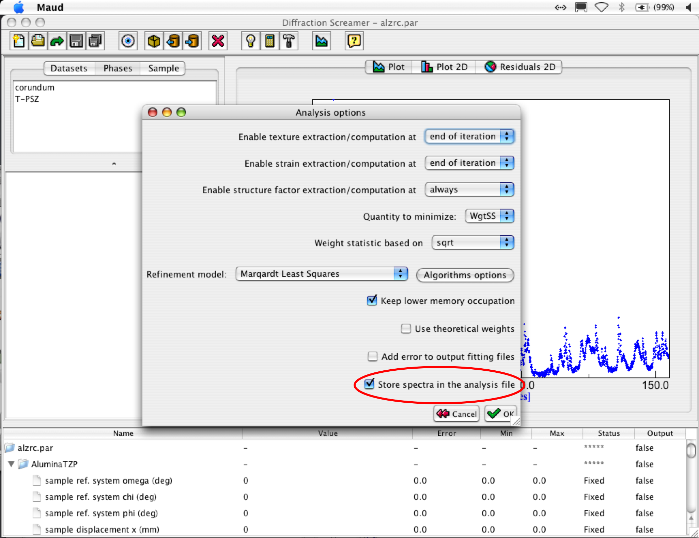
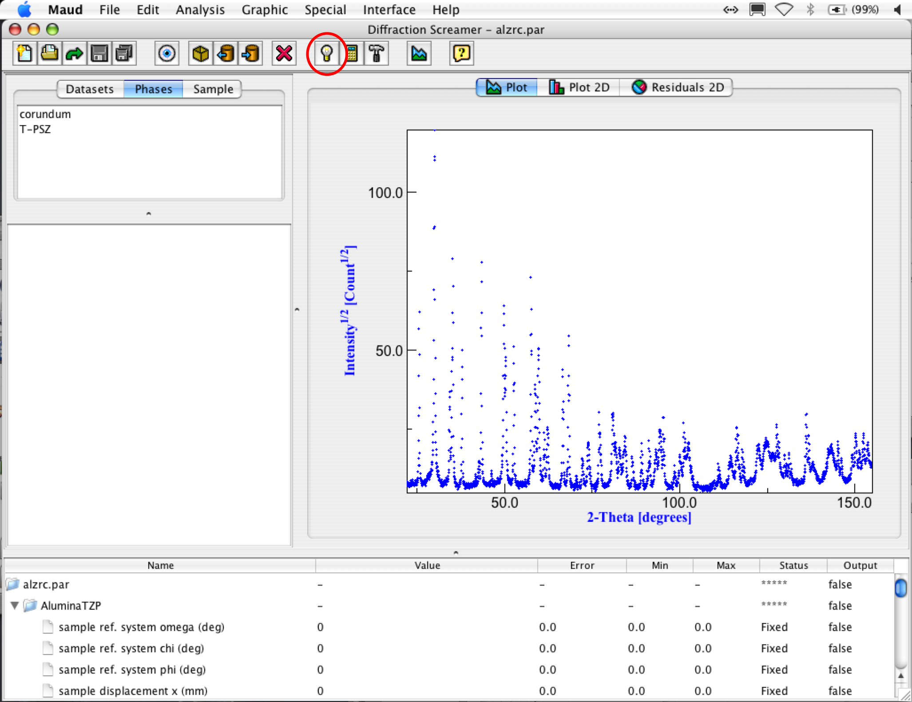
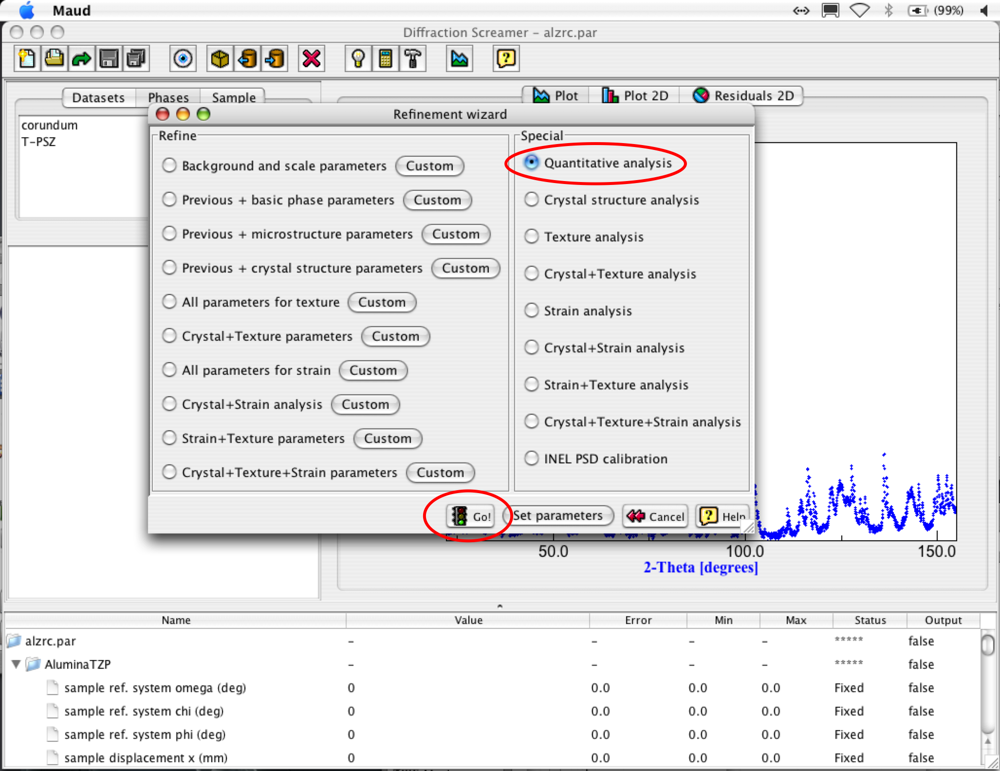
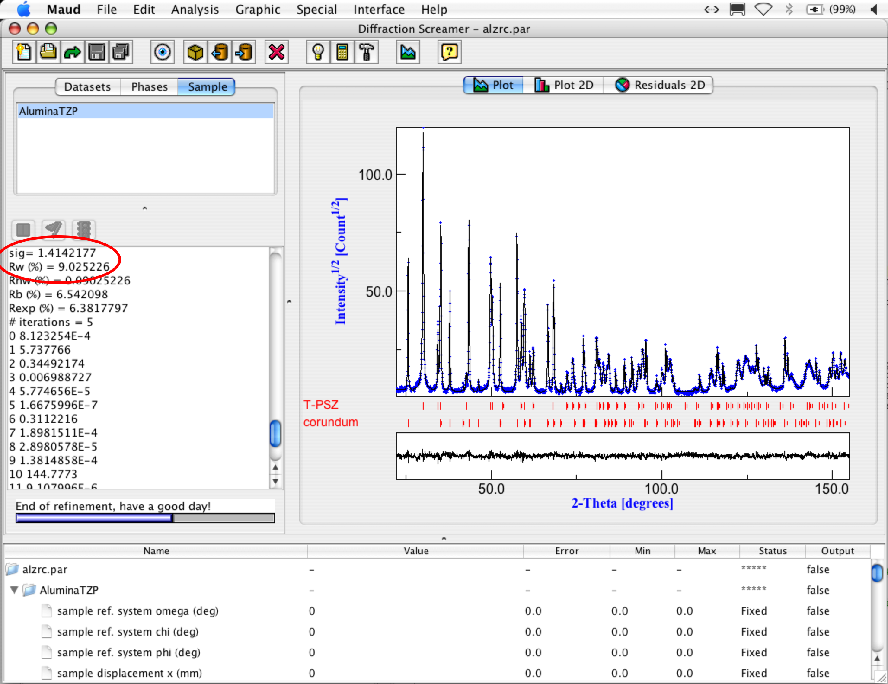
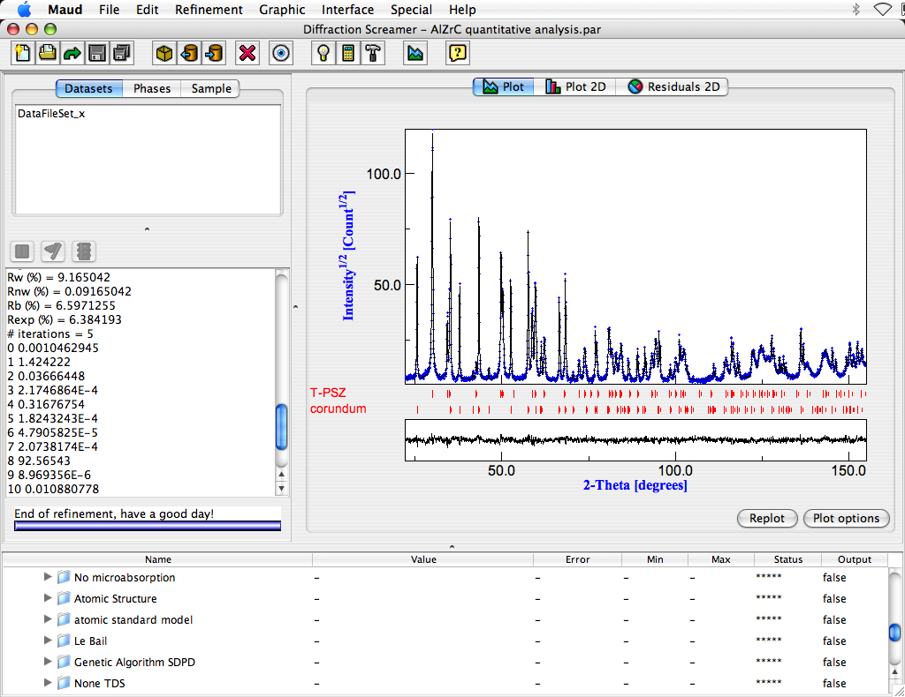

Running the analysis (step 4)
- We are now ready to start the quantitative analysis.
- Save the analysis with a name using the 'Save' menu item if you already set up a name to the analysis file or
using the 'Save as' option from the 'File' menu otherwise. Put a
name like "AlZr.par" in the "File name" field. DON'T FORGET THE
FILENAME EXTENSION ".par"! The program won't set it automatically.
- TIP: from version 2.04x it is possible to store the spectrum data inside the analysis file, so you can save and move your analysis file without the need to carry or move around also the original data. To do this, click on the analysis menu bar and select options (this option will move to the preferences in the future). A window will appear like in the picture below. Check on the option store spectra in the analysis file (circled in red in the picture).

Refinement options panel: save option
- In the menu bar click again on the 'Analysis' menu and then on the 'Wizard' menu item. Or use the 'Wizard' shortcut in the toolbar (the button with a light bulb; see picture below).

Open the wizard panel from the toolbar
A new window called "Refinement wizard" will appear, showing many option buttons.

Refinement wizard panel
Rightside, in the "Special" panel, choose the option "Quantitative
analysis". Then click on the 'Go!' button and calculations will start
up. The information about calculations progress will show up in the panel on the left of the plot under
the list object panel. Wait until the message
"End of refinement, have a good day!" at the bottom of the textbox will appear.
- Look inside the panel. It is useful to have an idea on how the analysis worked out. The
most important parameters are the final Rw and sigma values. They tell
the goodness of your fitting. For this analysis, you should have something like:
Rw<15.0
sig<2.0

Refinement wizard panel
If the values are higher, press again the refinement buttom (the hammer button on the toolbar) or choose 'Refinement' from the 'Analysis' menu bar to
let the program do some additional refinement iterations with the last parameters refinable.
At the end you should get something like in the following figure:

Final refinement